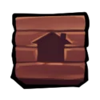
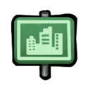
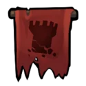
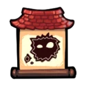
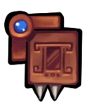
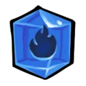
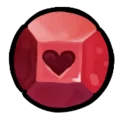
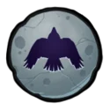
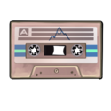

Capítulo 01 - Prólogo
Primeiro contato com o jogo, focado em ensinar a movimentação básica e introduzir os personagens Madeline, Granny e Bird.


Celeste é divido em capítulos, cada um com uma curva própria de desafio, tema e escolha de desafios e música cuidadosamente desenhados, escritos e tocados para contar a história do jogo de maneira envolvente e emocionante de um jeito divertido e agradável.

Primeiro contato com o jogo, focado em ensinar a movimentação básica e introduzir os personagens Madeline, Granny e Bird.

Primeira seção de gameplay do jogo, introduz mais mecanicas do jogo como dashes, dash refills e morangos, Theo também é introduzido neste capítulo.

A maior parte se passa durante um sonho de Madeline, introduz novas mecanicas e a personagem Badeline.

Ocorre no decrépito hotel onde Sr. Oshiro reside, Madeline tem que enfrenta-lo para conseguir sair e continuar sua jornada.

Se passa na parte com ventos fortes, com desafios de controle e precisão e salas mais abertas.

Uma fase com muito menos linearidade que as outras, com salas escuras e design similar ao de labirintos.

Um dos níveis mais longos de Celeste, que desafia a paciência e a persistência do jogador e o recompensa brilhantemente ao seu final.

Finalmente o pico da montanha, o ponto mais alto da jornada em Celeste em que todos os seus conhecimentos até agora são testados.
Capítulo final do jogo principal, que encerra a história via a descida do topo, o capitulo mais curto.

Um dos capitulos mais dificeis do jogo, que testa as habilidades do jogador de maneira intensa e punitiva, exigindo maior precisão e solução de problemas.

Capítulo lançado como DLC gratuita, extremamente longo, desafiador e emocionante, exigindo mecânicas avançadas do jogador e um encerramento definitivo à história.

Em todos os capítulos é possivel achar um colecionavel que adiciona uma versão alternativa da fase, normalmente bem mais dificil e curta.